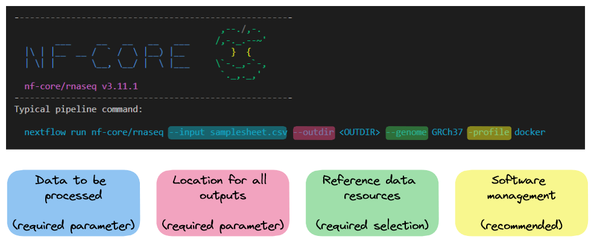
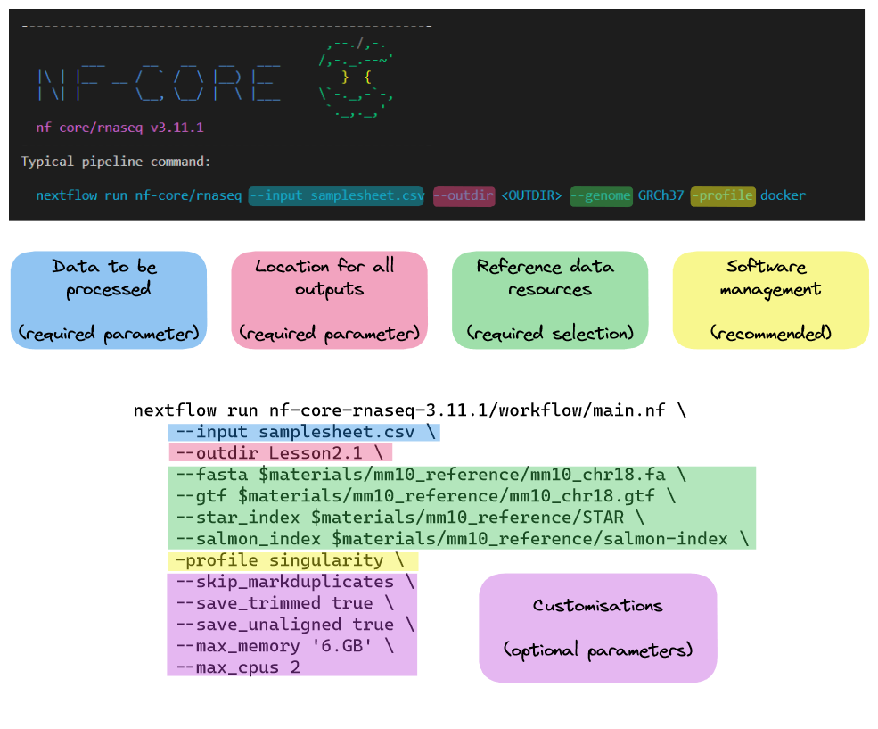

2.1. Design and execute an nf-core run command
- Understand the levels of customisation available for nf-core pipelines
- Use the nf-core documentation to select appropriate parameters for a run command
- Write and run a nf-core rnaseq command on the command line
- Explore pipeline deployment and outputs
Before scaling the nf-core/rnaseq pipeline up to a full dataset, we’ll explore the functionality of the workflow and identify processes that may need to be adjusted or customised. While nf-core pipelines are designed to run with ‘sensible’ default settings, these may not always suit the needs of your experiment of compute environment. Designing a custom run command requires you to identify which parameters you need to specify to suit your circumstances and experimental design. In this lesson, we will download an nf-core pipeline, then design and execute a customised run command using various parameters.
2.1.1. Download the pipeline code
➤ In this session we are using Singularity containers to manage software installation for all nf-core/rnaseq tools. Confirm the Singularity cache directory we set in the previous session using the $NXF_SINGULARITY_CACHEDIR Nextflow environmental variable:
echo $NXF_SINGULARITY_CACHEDIRThis should match the directory you set in the previous session:
/home/ubuntu/singularity_cacheUse the nf-core download command to download a local copy of the nf-core/rnaseq workflow that:
- Downloads pipeline version 3.11.1
- Outputs the code base to
~/session2/nf-core-rnaseq-3.11.1/ - Downloads Singularity containers
- Uses the preset Singluarity cache and does not copy images to the output directory
As we explored in Lesson 1.4.3 we can fetch the workflow code base with the following command:
nf-core download rnaseq \
--revision 3.11.1 \
--outdir ~/session2/nf-core-rnaseq-3.11.1 \
--container singularity \
--compress none \
--singularity-cache-onlyThe pipeline files and institutional configuration files from nf-core/configs will be downloaded to ~/session2/nf-core-rnaseq-3.11.1. Inside this directory you will see 2 subdirectories.
➤ Take a look at the directory structure:
ls -l nf-core-rnaseq-3.11.1/*nf-core-rnaseq-3.11.1/configs:
total 64
-rwxrwxr-x 1 ubuntu ubuntu 1562 Apr 21 09:17 CITATION.cff
-rwxrwxr-x 1 ubuntu ubuntu 1064 Apr 21 09:17 LICENSE
-rwxrwxr-x 1 ubuntu ubuntu 17476 Apr 21 09:17 README.md
drwxrwxr-x 2 ubuntu ubuntu 4096 Apr 21 09:17 bin
drwxrwxr-x 3 ubuntu ubuntu 4096 Apr 21 09:17 conf
-rwxrwxr-x 1 ubuntu ubuntu 204 Apr 21 09:17 configtest.nf
drwxrwxr-x 4 ubuntu ubuntu 4096 Apr 21 09:17 docs
-rwxrwxr-x 1 ubuntu ubuntu 70 Apr 21 09:17 nextflow.config
-rwxrwxr-x 1 ubuntu ubuntu 8249 Apr 21 09:17 nfcore_custom.config
drwxrwxr-x 2 ubuntu ubuntu 4096 Apr 21 09:17 pipeline
nf-core-rnaseq-3.11.1/workflow:
total 216
-rwxrwxr-x 1 ubuntu ubuntu 58889 Apr 21 09:17 CHANGELOG.md
-rwxrwxr-x 1 ubuntu ubuntu 9681 Apr 21 09:17 CITATIONS.md
-rwxrwxr-x 1 ubuntu ubuntu 9078 Apr 21 09:17 CODE_OF_CONDUCT.md
-rwxrwxr-x 1 ubuntu ubuntu 1096 Apr 21 09:17 LICENSE
-rwxrwxr-x 1 ubuntu ubuntu 10002 Apr 21 09:17 README.md
drwxrwxr-x 3 ubuntu ubuntu 4096 Apr 21 09:17 assets
drwxrwxr-x 2 ubuntu ubuntu 4096 Apr 21 09:17 bin
drwxrwxr-x 2 ubuntu ubuntu 4096 Apr 21 09:17 conf
drwxrwxr-x 3 ubuntu ubuntu 4096 Apr 21 09:17 docs
drwxrwxr-x 2 ubuntu ubuntu 4096 Apr 21 09:17 lib
-rwxrwxr-x 1 ubuntu ubuntu 2736 Apr 21 09:17 main.nf
drwxrwxr-x 4 ubuntu ubuntu 4096 Apr 21 09:17 modules
-rwxrwxr-x 1 ubuntu ubuntu 13970 Apr 21 09:17 modules.json
-rwxrwxr-x 1 ubuntu ubuntu 10847 Apr 21 09:17 nextflow.config
-rwxrwxr-x 1 ubuntu ubuntu 42576 Apr 21 09:17 nextflow_schema.json
-rwxrwxr-x 1 ubuntu ubuntu 359 Apr 21 09:17 pyproject.toml
drwxrwxr-x 4 ubuntu ubuntu 4096 Apr 21 09:17 subworkflows
-rwxrwxr-x 1 ubuntu ubuntu 1684 Apr 21 09:17 tower.yml
drwxrwxr-x 2 ubuntu ubuntu 4096 Apr 21 09:17 workflowsThe public institutional configs were downloaded to the configs directory. The code base for our pipeline will be stored in the workflow directory. The files and directories we will be working with in this session are:
| Feature | Importance |
|---|---|
conf/ |
Contains files, default configuration settings and optional profiles that build on global settings set by nextflow.config |
main.nf |
The executable Nextflow script that defines the structure and flow of the workflow. It calls workflows/rnaseq.nf |
modules/ |
Contains Nextflow processes used by the workflow. Each process is split into a module with its own main.nf file |
workflows/rnaseq.nf The complete rnaseq pipeline, containing modules and subworkflows that are connected by channels |
In situations where you might not wish to use the nf-core tools utility, download the nf-core/rnaseq source code from it’s GitHub repository with git.
Clone the nf-core/rnaseq repository:
git clone https://github.com/nf-core/rnaseq.git⛔ BEWARE ⛔ this method will download a copy of the pipeline with a different directory name and slightly different structure. If you choose to use this method, you will need to adjust some paths specified in the upcoming lessons accordingly.
2.1.2. Design your run command
As we learned in lesson 1.3.3, all nf-core pipelines have a unique set of pipeline-specific parameters that can be used in conjunction with Nextflow parameters to configure the workflow. Generally, nf-core pipelines can be customised at a few different levels:
| Level of effect | Customisation feature |
|---|---|
| The workflow | Where diverging methods are available for a pipeline, you may choose a path to follow |
| A process | Where more than one tool is available for a single step, you may choose which to use |
| A tool | Apply specific thresholds or optional flags for a tool on top of the default run command |
| Compute resources | Specify resource thresholds or software execution methods for the workflow or a process |
All nf-core pipelines are provided with comprehensive documentation that explain what the default workflow structure entails and options for customising this based on your needs. It is important to remember that nf-core pipelines typically do not include all possible tool parameters. This makes it challenging to piece these different sources of information together to determine which parameters you should be using.
The following sections of the documentation can be used to understand what the pipeline is doing and inform your choices about aspects of pipeline-specific customisations:
| Docs | Description | Customisation level |
|---|---|---|
| Introduction | Workflow summary |
|
| Usage | Inputs and options |
|
| Parameters | Available flags |
|
| Output | Files from all processes processes |
|
Pipeline structure
Looking at the nf-core/rnaseq pipeline structure provided in the introduction, we can see that the developers have:
- Organised the workflow into 5 stages based on the type of work that is being done
- Provided a choice of multiple methods and specified defaults
- Provided a choice of tool for some steps

❓ Observing the diagram above, which statement is true regarding the choice of alignment and quantification methods provided by the nf-core/rnaseq pipeline?
a. The pipeline uses a fixed method for read alignment and quantification.
b. Users can choose between several different methods for read alignment and quantification.
c. The pipeline always performs read alignment and quantification using STAR or HISAT2.
d. The choice of alignment and quantification method is determined automatically based on the input data.
The correct answer is b. The nf-core/rnaseq pipeline allows users to choose between pseudo-alignment and quantification or several different methods for genome-based read alignment and quantification.
- a is incorrect because the pipeline is not limited to a single method.
- c is incorrect because while read alignment and quantification using STAR and Salmon are the default method, users can choose pseudo-alignment method.
- d is also incorrect, as the pipeline only accepts fastq files as input and the choice of alignment and quantification method must be specified by the user.
Default pipeline usage
The number and type of default and optional parameters an nf-core pipeline accepts is at the discretion of it’s developers. However, at a minimum, nf-core pipelines typically:
- Require users to specify a sample sheet (
--input) detailing sample data and relevant metadata - Autogenerate or acquire missing reference files from iGenomes ( using the
--genome) if not provided by the user.
➤ You can see the recommended (typical) run command and all the parameters available for the nf-core/rnaseq pipeline by running:
nextflow run nf-core-rnaseq-3.11.1/workflow/main.nf --help The typical or recommended run command for this pipeline is provided at the top of the screen:

It outlines a requirement for a few basic things:
- An input samplesheet
- A location to store outputs
- Relevant reference data
- A software management method
Nextflow-specific parameters use one (-) hyphen, whereas pipeline-specific parameters use two (--). In the typical run command above -profile is a Nextflow parameter, while --input is an nf-core parameter.
Required: --input
Most of us will need to adjust the default run command for our experiments. Today we’ll be adjusting the typical nf-core/rnaseq run command by:
- Providing our own reference files
- Using the Singularity software management profile, instead of Docker
- Customising the execution of some processes
- Specifying the computing resource limitations of our instances (2 CPUs, 8 Gb RAM)
➤ Our input fastq files (fastqs/), reference data (mm10_reference/), and full sample sheet (samplesheet.csv) are already available on an external file system called CernVM-FS that we can access from our Nimbus instances. Take a look at the files:
ls -l /cvmfs/data.biocommons.aarnet.edu.au/training_materials/SIH_training/UnlockNfcore_0523drwxrwxr-x 2 ubuntu ubuntu 4096 Feb 14 05:36 fastqs
drwxrwxr-x 3 ubuntu ubuntu 4096 Feb 14 05:46 mm10_reference
-rw-rw-r-- 1 ubuntu ubuntu 641 Feb 16 05:57 samplesheet.csv➤ Our CVMFS path is very long, for the sake of tidiness, store the CVMFS path in a variable for our run command:
materials=/cvmfs/data.biocommons.aarnet.edu.au/training_materials/SIH_training/UnlockNfcore_0523➤ Given we are only testing the pipeline in this session, we only need to work with a couple of samples. Copy the first two samples from the full prepared sample sheet to a local version of the file:
head -n 3 $materials/samplesheet.csv > samplesheet.csvsample,fastq_1,fastq_2,strandedness
SRR3473989,/cvmfs/data.biocommons.aarnet.edu.au/training_materials/SIH_training/UnlockNfcore_0523/fastqs/SRR3473989_selected.fastq.gz,,forward
SRR3473988,/cvmfs/data.biocommons.aarnet.edu.au/training_materials/SIH_training/UnlockNfcore_0523/fastqs/SRR3473988_selected.fastq.gz,,forwardRequired: reference data
Many nf-core pipelines have a minimum requirement for reference data inputs. The input reference data requirements for this pipeline are provided in the usage documentation. We can replace the --genome flag in the typical run command with our own files. To see what reference files we can specify using parameters, rerun the pipeline’s help command to view all the available parameters:
nextflow run nf-core-rnaseq-3.11.1/workflow/main.nf --help --show_hidden_paramsFrom the Reference genome options parameters, we will provide our own files using:
--fasta $materials/mm10_reference/mm10_chr18.fa
--gtf $materials/mm10_reference/mm10_chr18.gtf--star_index $materials/mm10_reference/STAR--salmon_index $materials/mm10_reference/salmon-index
Notice the message at the bottom of the screen:
!! Hiding 24 params, use --show_hidden_params to show them !!Keep in mind that both this help command and the nf-core parameters documentation hides less common parameters.
Optional parameters
Now that we have prepared our input and reference data, we will customise the typical run command by:
- Using Nextflow’s
-profileparameter to specify that we will be running the Singularity profile instead of the Docker profile - Adding additional process-specific flags to skip duplicate read marking, save trimmed reads and save unaligned reads
- Adding additional max resource flags to specify the number of CPUs and amount of memory available to the pipeline.
The parameters we will use are:
-profile singularity--skip_markduplicates true--save_trimmed true--save_unaligned true--max_memory '6.GB'--max_cpus 2
Recall from session 1 that nf-core modules use ext.args to pass additional arguments to a module. This uses a special Nextflow directive ext. If an nf-core pipeline does not have a pre-defined parameter for a process, you may be able to implement ext.args as we do in lesson 2.4.4.
The inclusion of ext.args is currently best practice for all DSL2 nf-core modules where additional parameters may be required to run a process. However, this may not be implemented for all modules in all nf-core pipelines. Depending on the pipeline, these process modules may not have defined the ext.args variable in the script blocks and is thus not available for applying customisation. If that is the case consider submitting a feature request or a making pull request on the pipeline’s GitHub repository to implement this!
You can see how we’ve customised the typical run command in the diagram below:

2.1.3. Run the pipeline
➤ Now that we have prepared our data and chosen which parameters to apply, run the pipeline:
nextflow run nf-core-rnaseq-3.11.1/workflow/main.nf \
--input samplesheet.csv \
--outdir Lesson-2.1 \
--fasta $materials/mm10_reference/mm10_chr18.fa \
--gtf $materials/mm10_reference/mm10_chr18.gtf \
--star_index $materials/mm10_reference/STAR \
--salmon_index $materials/mm10_reference/salmon-index \
-profile singularity \
--skip_markduplicates \
--save_trimmed true \
--save_unaligned true \
--max_memory '6.GB' \
--max_cpus 2Take a look at the stdout printed to the screen. Your workflow configuration and parameter customisations are all documented here. You can use this to confirm if your parameters have been correctly passed to the run command:

As the workflow starts, you will also see a number of processes spawn out underneath this. Recall from session 1 that processes are executed independently and can run in parallel. Nextflow manages the data dependencies between processes, ensuring that each process is executed only when its input data is available and all of its dependencies have been satisfied.
To understand how this is coordinated, consider the STAR_ALIGN process that is being run.

You’ll notice a few things:
- We can see which inputs are being processed by looking at the end of the process name
- When a process starts it progressively spawns tasks for all inputs to be processed
- A single TRIMGALORE process is run across both samples in our
samplesheet.csvbefore STAR_ALIGN begins - Once a TRIMGALORE task is completed for a sample, the STAR_ALIGN task for that sample begins
- When the STAR_ALIGN process starts, it spawns 2 tasks.
2.1.4. Examine the outputs
Once your pipeline has completed, you should see this message printed to your terminal:
-[nf-core/rnaseq] Pipeline completed successfully with skipped sampl(es)-
-[nf-core/rnaseq] Please check MultiQC report: 2/2 samples failed strandedness check.-
Completed at: 21-Apr-2023 03:58:56
Duration : 9m 16s
CPU hours : 0.3
Succeeded : 66The pipeline ran successfully, however, note the warning about all samples having failed the strandedness check. We’ll explore that in the next lesson.
➤ In the meantime, list (ls -la) the contents of your directory, you’ll see a few new directories (and a hidden directory and log file) have been created:
total 416
drwxrwxr-x 7 ubuntu ubuntu 4.0K Apr 21 03:44 .
drwxr-x--- 15 ubuntu ubuntu 4.0K Apr 21 01:56 ..
drwxrwxr-x 4 ubuntu ubuntu 4.0K Apr 21 03:58 .nextflow
-rw-rw-r-- 1 ubuntu ubuntu 371K Apr 21 03:58 .nextflow.log
-rw-rw-r-- 1 ubuntu ubuntu 17K Apr 21 03:50 .nextflow.log.1
drwxrwxr-x 7 ubuntu ubuntu 4.0K Apr 21 03:58 Lesson-2.1
drwxrwxr-x 4 ubuntu ubuntu 4.0K Apr 21 02:08 nf-core-rnaseq-3.11.1
-rw-rw-r-- 1 ubuntu ubuntu 563 Apr 21 03:14 samplesheet.csv
drwxrwxr-x 143 ubuntu ubuntu 4.0K Apr 21 03:58 workNextflow has created 2 new output directories, work and Lesson-2.1 in the current directory.
The work directory
As each job is run, a unique sub-directory is created in the work directory. These directories house temporary files and various command logs created by a process. We can find all information regarding this process that we need to troubleshoot a failed process.
The Lesson-2.1 directory
All final outputs will be presented in a directory specified by the --outdir flag.
The .nextflow directory
This directory contains a cache subdirectory to store cached data such as downloaded files and can be used to speed up subsequent pipeline runs. It also contains a history file which contains a record of pipeline executions including run time, the unique run name, and command line arguments used.
The .nextflow.log file
This file is created by Nextflow during the execution of a pipeline and contains information about all processes and any warnings or errors that occurred during execution.
Was the runtime for the STAR_ALIGN process comparable for samples SRR3473988 and SRR3473989?
💡 Hint: use the nextflow log <run_name> -f command and Nextflow trace fields.
Run the following:
nextflow log <run_name> -f name,realtime | grep "STAR_ALIGN" Read alignment was comparable for both samples:
NFCORE_RNASEQ:RNASEQ:ALIGN_STAR:STAR_ALIGN (SRR3473989) 2m 37s
NFCORE_RNASEQ:RNASEQ:ALIGN_STAR:STAR_ALIGN (SRR3473988) 2m 17s- nf-core pipelines are provided with sensible default settings and required inputs.
- An nf-core pipeline’s Usage, Output, and Parameters documentation can be used to design a suitable run command.
- Parameters can be used to customise the workflow, processes, tools, and compute resources.